There are various plugins available on VisualVM Plugins Center including 3rd party plugins; other plugins can be obtained as separate downloads from their respective authors. Note that the IDE integration plugins are described on the Features page.
If you need a special feature or support for a particular tool, you can implement your own plugin. It's easy and there is plenty of information and sample code available for both the NetBeans Platform and VisualVM APIs. A good place to start is the Write Plugin section.
To install a plugin from VisualVM Plugins Center follow these steps:
Note: plugins for offline VisualVM installations can be manually downloaded from the Plugins Centers page.
Some third-party plugins need to be installed from a downloaded .nbm file:
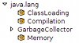MBeans Browser.
MBeans Browser plugin provides in general the same functionality as MBeans Browser in JConsole JDK tool: shows MBeans of an application, displays values, operations and notifications.
In VisualVM the browser will be further improved to deliver better usability and support for latest JMX features.
Available on VisualVM Plugins Center
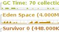Visual GC Plugin.
Integration of the Visual GC tool into VisualVM. Visual GC attaches to an application and collects and graphically displays garbage collection, class loader, and HotSpot compiler performance data.
See Visual GC page for more information.
Available on VisualVM Plugins Center
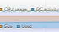Tracer.
Framework and GUI for detailed monitoring and analyzing Java applications. Using various types of probes, the Tracer gathers metrics from an application and displays the data in a timeline.
The data are displayed both graphically and in a table and can be exported to common formats for further processing in external tools.
Available on VisualVM Plugins Center
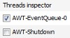Threads Inspector.
The plugin integrates with the Threads tab and enables analyzing stack trace(s) of one or more selected threads directly without requiring you to take and
open full thread dumps. This is extremely useful for quick and easy analyzing various threading problems.
Available on VisualVM Plugins Center
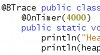BTrace Plugin.
BTrace is a dynamic tracing tool for Java. With this plugin you can create, deploy and save BTrace tracing scripts directly from the VisualVM. Visit
http://kenai.com/projects/btrace for more details.
Available on VisualVM Plugins Center
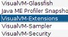VisualVM Extensions.
The intent of this module is to add support for additional functionality (such as new JDKs, JVMs, HotSpot versions, etc.) not supported by the VisualVM core modules at the time VisualVM was released.
It's always a good idea to get this plugin for a fresh VisualVM installation.
Available on VisualVM Plugins Center
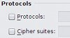Security.
GUI for setting the keystore, truststore, protocols and ciphers for SSL/TLS connections in VisualVM. Using the plugin is equivalent
to setting appropriate system properties javax.net.ssl.* and javax.rmi.ssl.client.*
Available on VisualVM Plugins Center
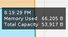Buffer Monitor.
A plugin to monitor usage of direct buffers created by ByteBuffer.allocateDirect and mapped buffers created by FileChannel.map.
Note that the buffers monitoring requires the monitored application to run JDK 7 starting from Build 36.
Available on VisualVM Plugins Center
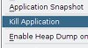Kill Application.
Allows to kill monitored application which became unresponsive.
Available on VisualVM Plugins Center
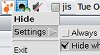System Tray.
Allows to minimize/restore running VisualVM instance into/from system tray. Not supported on Mac OS X (does nothing).
Available on VisualVM Plugins Center
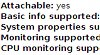JVM Capabilities.
Adds an extra section to the Overview tab displaying capabilities of monitored application's JVM.
Available on VisualVM Plugins Center
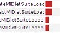Java ME Profiler Snapshot Viewer.
Allows to open Java ME SDK profiler file in VisualVM.
Available on VisualVM Plugins Center
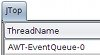JConsole Plugins Container.
JConsole Plugins container provides support for using existing JConsole plugins (like JTop) inside VisualVM. The plugins are fully functional, but we suggest to convert them to VisualVM
plugins to better fit VisualVM workflow and UI and benefit from rich VisualVM APIs providing more data sources with lower overhead.
Available on VisualVM Plugins Center
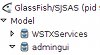GlassFish Plugin.
GlassFish plugin provides additional information for GlassFish servers like number of active sessions, processed transactions etc. It's also able to monitor each deployed
web application separately.
Available on VisualVM Plugins Center
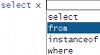OQL Syntax Support.
This plugin installs an enhanced editor for OQL Console in HeapWalker providing syntax coloring and basic code completion.
Available on VisualVM Plugins Center
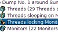TDA Plugin.
The Thread Dump Analyzer (TDA) for Java is a small GUI for analyzing Thread Dumps and Heap Information generated by the Sun Java VM. It provides statistics about thread dumps, gives information about locked monitors and waiting threads and much more.
For detailed description visit http://java.net/projects/tda.
Available on VisualVM Plugins Center
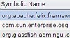OSGi Plugin.
A plugin to enable basic management of OSGi platforms via JMX. For detailed description and installation instructions visit the plugin page.
Available on VisualVM Plugins Center
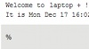CRaSH Plugin.
A plugin to support the CRaSH open source shell for the Java Platform in VisualVM. For detailed description and installation instructions visit the plugin page.
Available on vendor Plugins Center
These resources are currently available for VisualVM plugin developers:
A lot of information and sample VisualVM plugins is available on Geertjan's Blog (blog by Geertjan Wielenga). You may send your questions and get assistance on users@visualvm.java.net mailing list (you need to be registered to access the mailing list).
{kind=link}
{kind=link}
{kind=link}
{kind=link}
{kind=link}
{kind=link}
{kind=link}
{kind=link}
{kind=link}
{kind=link}
{kind=link}
{kind=link}
{kind=link}
{kind=link}
{kind=link}
{kind=link}
{kind=link}
{kind=link}